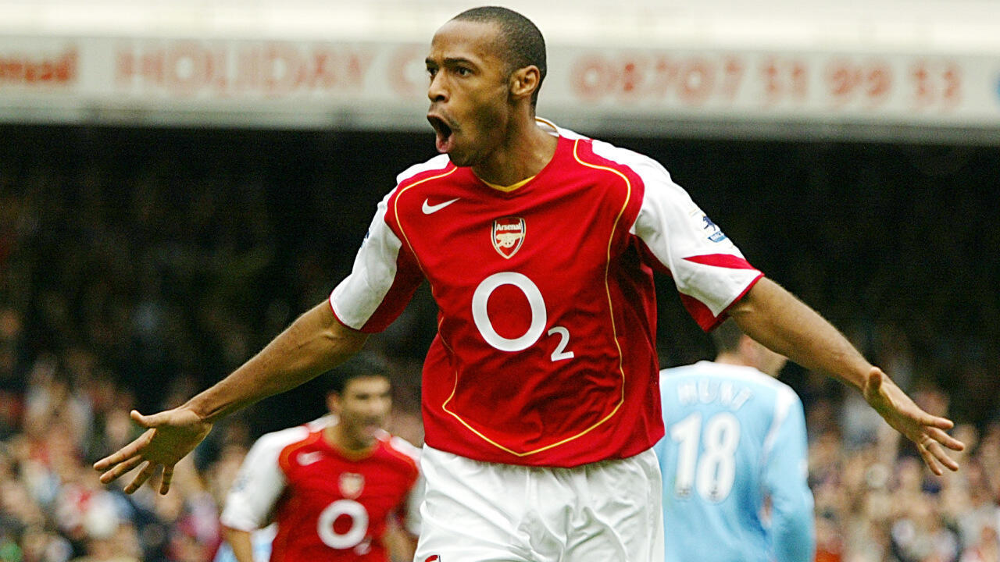

Thierry Henry, né le 17 août 1977 aux Ulis, dans l'Essonne, est un footballeur international français qui a évolué au poste d'attaquant du milieu des années 1990 au milieu des années 2010, reconverti entraîneur et consultant.

Grand buteur, Thierry Henry est considéré comme l'un des meilleurs attaquants de l'histoire du football et l'un des meilleurs joueurs à avoir évolué dans le championnat anglais. Il s'est classé deux fois sur le podium du Ballon d'or en 2003 (deuxième) et 2006 (troisième). Meilleur buteur de l'histoire d'Arsenal, une statue en bronze à son effigie est inaugurée aux abords de l'Emirates Stadium en 2011. Il est le deuxième meilleur buteur français de l'histoire toutes compétitions confondues, que ce soit en club et en sélection, avec 411 buts au total derrière Karim Benzema.